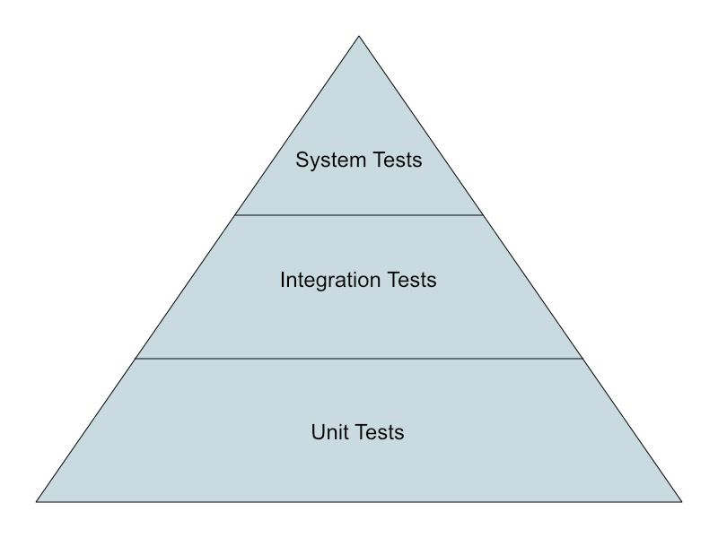

Web
Testing JavaScript Applications
## <i class="fas fa-tasks"></i> Overview of Today's Class - Testing Javascript Applications - Unit tests - Integration tests - System tests
## <i class="fa-solid fa-graduation-cap"></i> Educational Objectives On completion of this part, students will be able to: - Describe the pros and cons of different types of tests - Write unit tests for a JavaScript application - Read and understand unit tests
Testing JavaScript Applications
<img src="images/good_code.png" style="width: 30%;" /> https://xkcd.com/844/
## <i class="fas fa-question-circle"></i> How to write good code? *If you haven't tested it, assume it is broken!* But from where should I start? Recall the cornerstones of computational thinking: - Decomposition - Data Representation / Pattern recognition - Generalization / Abstraction - Algorithms
*The whole is greater than the sum of its parts.* **Aristotle**
## <i class="fas fa-check-square"></i> Test automation In software testing, test automation is the use of a software separate from the software being tested to control the execution of tests and the comparison of actual outcomes with predicted outcomes. https://en.wikipedia.org/wiki/Test_automation
## <i class="fas fa-file-code"></i> Grab the code https://github.com/HEIGVD-WEB-26/test-automation
## <i class="fas fa-check-square"></i> Types of tests <p></p> Notes: - **Unit tests**: Test a **separable unit of software** for correctness, independently of the larger software System. That unit is usually the smallest testable part of an application, and has a single and clear responsibility. - **Integration tests**: Individual units of software that pass unit tests are **assembled together into components**. Integration tests ensure that the components made of different parts work correctly together. The units are considered correct, and the goal is to test that the interaction between them is correct for what we want the component to do. - **System tests**: All the component that pass the integration tests are **assembled together into the system**. System tests verify the **end-to-end functionality** of the system. They are usually **hard to automate** and very expensive to implement and execute.
## <i class="fas fa-cog"></i> Unit tests - Test a **separable unit of software** for correctness, independently of the larger software System - Employed as a **low-level** specification to ensure that a function or module performs as expected - Usually fast to implement and execute - **Example:** *testing that the subscriber's email is valid*
## <i class="fas fa-cogs"></i> Integration Tests - Individual units of software that pass unit tests are **assembled together into components** - Integration tests ensure that the components made of different parts work well together - Sometimes slow to implement and execute - Might require to mock some dependencies, e.g. a messaging queue to some other part of the system - **Example:** *test that the email was persisted in the subscriber table of the database*
## <i class="fas fa-car"></i> System Tests - All the component that pass the integration tests are **assembled together into the system** - System tests verify the **end-to-end functionality** of the system - Usually **hard to automate** and very expensive to implement and execute - Mocking some parts of application is sometimes needed, for example a third party system - **Example:** test that the user can subscribe to the mailing list by accessing the server from the chrome browser
## <i class="fas fa-clipboard"></i> Key takeaways - If you haven't tested it, assume it is broken! - Decomposition is the best friend of testable code - When testing, write: - A lot of unit tests - Some integration tests - Few selected system tests
https://landing.google.com/sre/books/ **Chapter 17:** Testing for Reliability
## <i class="fas fa-question-circle"></i> Questions